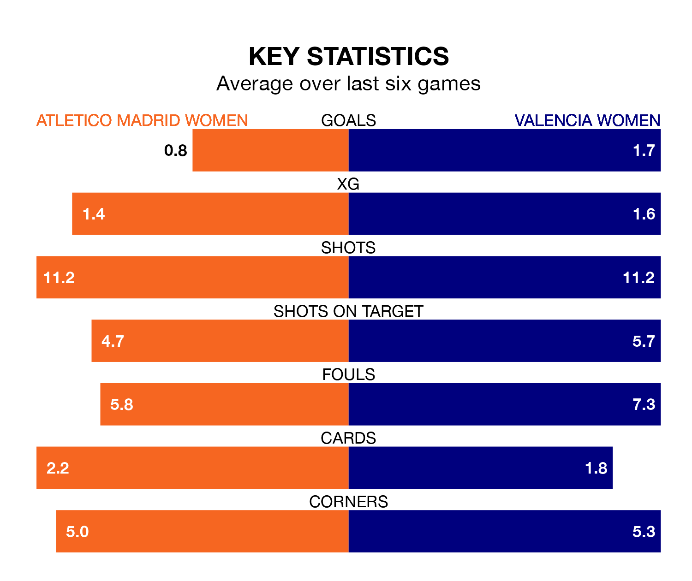

Valencia Women travel to Atletico Madrid Women on Saturday in Liga F.
The visitors come into the game on the back of a win in their last match, having beaten Granada Women 4-1 at home, with goals from Macarena Portales Nieto, Ana Marcos Moral, Ascensión Martínez Salinas and Ivonne Chacón.
Atletico Madrid, meanwhile, drew their last match, 1-1 against Eibar Women, with their goal scored by Eva Maria Navarro.
In the last 10 years, Atletico Madrid and Valencia have played each other on 18 occasions. Atletico Madrid won 10 of them, Valencia one, and they drew seven times.
On average, Atletico Madrid scored 2.1 goals and Valencia 0.7 in those matches.
Their last meeting was on January 7, when Atletico Madrid won 6-1 away.
With 27 goals in 21 games so far this season, Valencia are scoring at below the league average rate with 1.3 goals per game. And they are conceding more than average, letting in 46 goals at a rate of 2.2 per game.
Atletico Madrid, meanwhile, are above average scorers, with 1.7 goals per game, compared to a league average of 1.6. They have conceded 0.8 goals per game.
In Sheila Guijarro Gómez, the hosts have one of the league's most on-form strikers so far this season. She has notched 12 goals in 20 appearances, to sit fourth in the scoring charts.
Her goal rate of one every 134 minutes is slightly quicker than that of Marcos Moral, the away side's top scorer with a goal every 147 minutes, and a total of eight goals in 21 games.
Atletico Madrid are fifth in the table after 21 games, of which they have won 11 and drawn six, earning 39 points.
Valencia are five places behind Atletico Madrid in 10th, with six wins and four draws putting them on 22 points.
The home team are in mixed form in Liga F, with two wins and three draws from their last six games.
With two wins and a draw over that period, Valencia's form is slightly worse – they have taken seven points from 18, compared to Atletico Madrid's nine.
Updated: 12:39 (UTC), 26/03/24